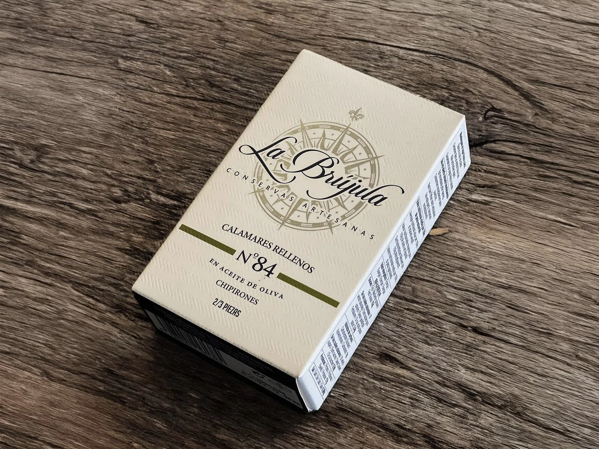

A Match Made in Culinary Heaven: La Brújula Squid and Attems Sauvignon Blanc

Sometimes the best meals require almost zero effort. If you keep a few high-quality tins in your pantry, you are always ten minutes away from a legitimate culinary experience. This is a personal favourite pairing, rich, savory seafood balanced against a sharp, bright white wine.
La Brújula Calamares Rellenos
If you have not tried La Brújula yet, you are missing out on some of the best craftsmanship in the world of seafood. These are tender little squids stuffed with their own tentacles and preserved in a rich Spanish olive oil. Silky, briny, and surprisingly filling.
Attems Sauvignon Blanc, Friuli
A heavy, buttery wine would get lost here. The Attems from Friuli, Italy, is all high energy, bright citrus, herbaceous lift, and a clean mineral finish. It cuts through the richness of the squid and makes the whole thing sing.
The Pasta Trick
While the La Brújula tins are great on their own, you can easily turn them into a main course that still showcases the Attems Sauvignon Blanc.
Boil a pot of linguine or spaghetti until just al dente. While the pasta is hot, toss it directly with the entire contents of the La Brújula tin. The olive oil from the squid becomes your sauce. To lean into the herbal notes of the wine, add a handful of fresh chopped parsley and a small sprinkle of red pepper flakes.
The Side Dish
Since the wine has those bright, zesty citrus notes, serve the pasta alongside a simple arugula salad with a squeeze of fresh lemon and shaved parmesan. The peppery greens and the lemon juice will pull even more flavour out of the Sauvignon Blanc. It turns a quick pantry snack into a sophisticated, cohesive dinner.
Find the Duo at the Shop
We carry both the La Brújula tins and the Attems Sauvignon Blanc. It is the perfect setup for a quiet night in or an easy appetizer when friends drop by. Come in and we will help you put it together.